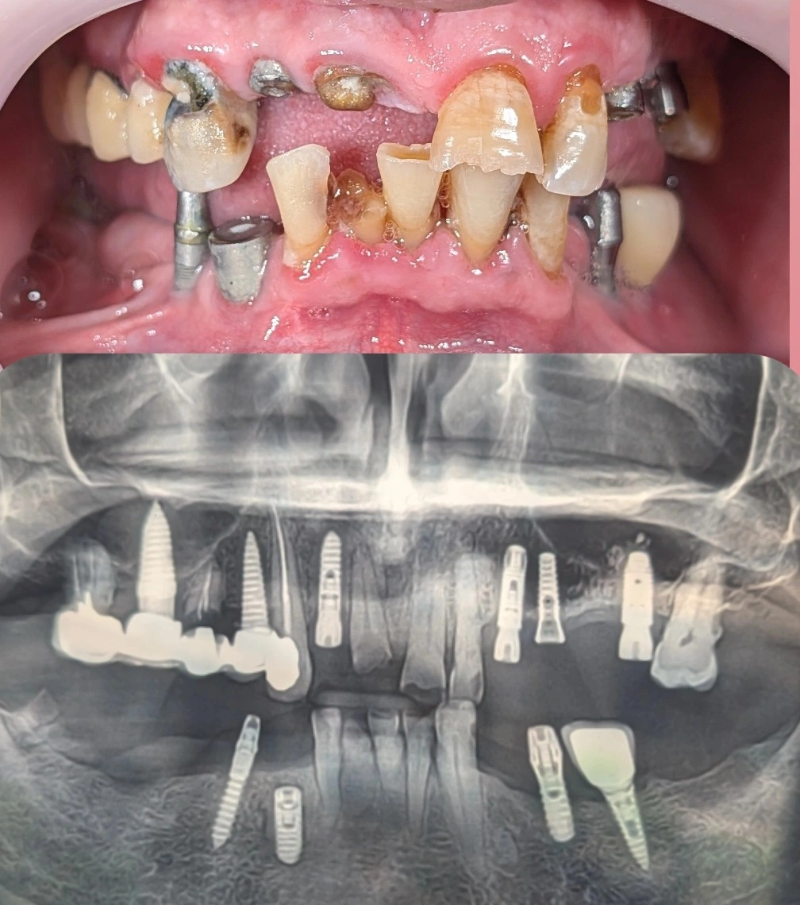

Chairside 24
طرحدرمانِ استیجبندیشده برای یک کیسِ ایمپلنتِ پیچیده؛ وقتی نبودِ دیدِ پروتزی در جراحیِ اولیه، پروتزِ نهایی را پیچیده میکند

وضعیتِ اولیه و چالشها. بیمار با سابقهی جراحیِ وسیعِ ایمپلنت توسط جراحی مجرب، جهتِ درمانِ پروتز به کلینیک مراجعه کرد. بخشی از ایمپلنتهای موجود بسیار قدیمی — با قدمتِ بیش از ۲۰ سال — بودند. بیمار اصرار و تمایلِ زیادی به شروعِ فوریِ درمانِ پروتزِ نهایی داشت؛ اما به دلیلِ نیاز به طیشدنِ فازهای بیولوژیک، جراحیهای تکمیلی و اصلاحی، زمانِ انتظار حداقل ۶ ماهه تا شروعِ فازِ پروتزِ نهایی تعیین شد. همچنین جهتِ اکونومیککردنِ طرحِ درمان و مدیریتِ هزینهها، تصمیم بر این شد که فعلاً به بریجِ بالا سمتِ راست دست نزنیم.
دیدگاهِ تشخیصی و اصولِ طرحِ درمانِ اصلاحی. در مواجهه با این کیسِ پیچیده، استراتژیِ درمان بر پایهی سه اصلِ اساسی پایهریزی شد:
- اولویتِ سلامتِ محیطی و ثباتِ اکلوژن. هدفِ اول ایجادِ یک محیطِ بیولوژیکِ سالم و بهدستآوردنِ یک اکلوژنِ باثبات است و تا این پایه محکم ایجاد نشود، درمانِ نهایی آغاز نخواهد شد.
- قاطعیت در حذفِ ایمپلنتهای شکستخورده. در مواجهه با ایمپلنتهای قدیمی یا معیوبی که شرایطِ نگهداری ندارند (ایمپلنتهای موردّدار)، هیچگونه تعارفی نداریم و اکسپلنت (خارجکردنِ آنها) خطِ اولِ درمان است.
- استیجبندیِ (فازبندیِ) هوشمندانه. طرحِ درمان کاملاً مرحلهبندی شد تا بیمار کمترین آسیبِ زیبایی و عملکردی را ببیند.
طرحِ درمان و فازبندیِ اجرا (Staging):
- فکِ بالا (مدیریتِ استتیک و درمانِ پایه). وضعیتِ دندانِ سانترالِ راستِ بالا مشخص و کاندیدِ جایگزینی با ایمپلنت شد. دندانِ کانین (نیش) راستِ بالا نیاز به درمانِ مجددِ پایه و روکش دارد؛ اما برای اینکه بیمار کمترین زمانِ ممکن را بدونِ دندانِ کانین سپری کند و ظاهر و استتیکِ او در همین حدی که هست بههم نریزد، درمانِ این دندان را فعلاً شروع نمیکنیم و آن را به فازهای بعدی موکول کردهایم؛ بعد از اتمامِ فازِ جراحی سراغِ این دندان خواهیم رفت.
- فکِ پایین سمتِ چپ (بازسازیِ اکلوژنِ اولویتدار). اکسپلنتِ ایمپلنتِ شمارهی ۵ (که کارایی نداشت) و جایگذاریِ دو ایمپلنتِ جدید در ناحیهی ۴ و ۵ پایین، جهتِ برقرارکردنِ اکلوژنِ این سمت در اولین فازِ عملیاتی.
- فکِ پایین سمتِ راست. انجامِ مشاورهی تخصصیِ پریو (لثه) و ورودِ بیمار به فازِ اولِ جراحی جهتِ آمادهسازیِ محیطِ سالم.
️نتیجهگیری و Clinical Tip: این کیس نمونهی بارزی از چالشهای ناشیِ از نبودِ «دیدِ پروتزی» در جراحیهای اولیه است. اگر جراحِ فکوصورت در زمانِ جراحی، طرحِ درمانِ نهاییِ پروتز و آیندهی لبخند و اکلوژنِ بیمار را مدِ نظر قرار میداد، وضعیتِ بیمار تا این حد پیچیده نمیشد.
محتوای این صفحه برای استفادهٔ آموزشی دندانپزشکان و دانشجویان دندانپزشکی تهیه شده است.